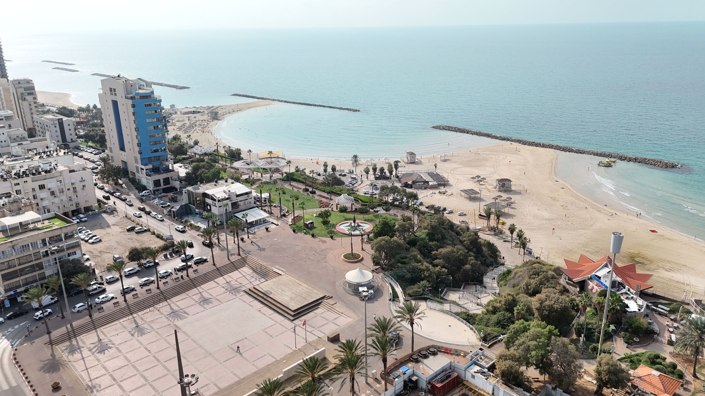
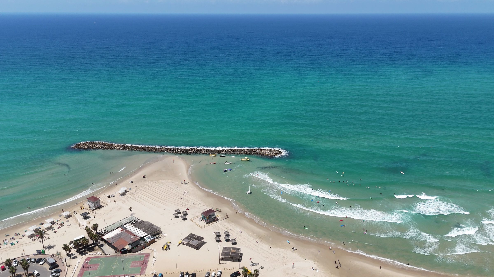

Le cœur de la ville,
à deux pas de la mer.
La Place de l'Indépendance
La Place de l'Indépendance
Kikar HaAtsmaout est le cœur de Netanya. On y vient pour les cafés et les restaurants, les concerts et les spectacles, les marchés artisanaux et les festivals. Depuis la place, la promenade mène à la mer en quelques minutes à pied.

10 mdes restaurants et des commerces
20 mdes synagogues
200 mde la promenade
350 mdes concerts et des festivals
500 mde la mer

La mer
- Plage Hertzl
- Plage Sironit
- La promenade du bord de mer
- Les falaises et leurs jardins
La place
- Concerts et spectacles
- Marchés artisanaux
- Festivals
- Fontaine et esplanade
Au quotidien
- Cafés et restaurants
- Commerces
- Synagogues et maisons d'études de divers rites
- Communauté francophone